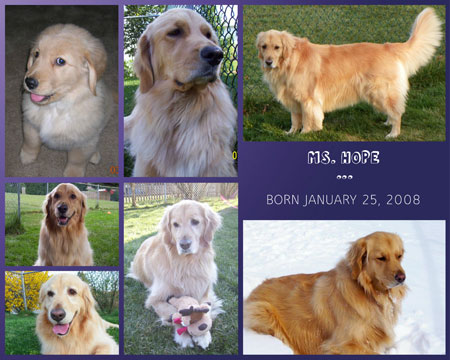

May 2012

Let me introduce you to Ms. Hope… Hope was born on January 25, 2008 in East Berlin, PA. Her mother was a beautiful Golden Retriever named Untouchable Taffy Lou Belle, but everyone called her Taffy. Her father’s name is CH Absolut Sonyc XXpresso and was called Tweet. Unfortunately, we never met her father, but we do know that her father and grandfather were award winning show dogs in Virginia. Hope was registered with the American Kennel Club as a Certified Pedigree on July 9, 2008. Hope was the older of only two pups. Her brother Buddy still lives with the family in East Berlin. We were blessed to be able to meet Hope when she was only two weeks old. Every week thereafter we were able to visit and play with her until we brought our baby girl home on March 21, 2008. She quickly made herself real comfortable because she knew she was home to stay. At 10 weeks old Hope was enrolled in puppy training at PetSmart where she graduated with honors. She was also trained at Redfern Canines in the Beginners Class & the Manners Class where she learned many new tricks and how to walk on a lease like a good girl. The classes were so much fun for all of us! Chris Montgomery visited us on the day Hope came home and started walking her the very next day. Chris and Dani have been walking Hope almost every day since. Hope truly loves her walking time with them. Ms. Hope loves the outdoors. She loves playing in the backyard with her Dadda, Momma and all her toys. She definitely loves people and everyone in the neighborhood. She has been referred to as the neighborhood mascot by many. Everyone just loves to visit with her!
|